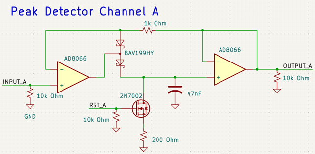
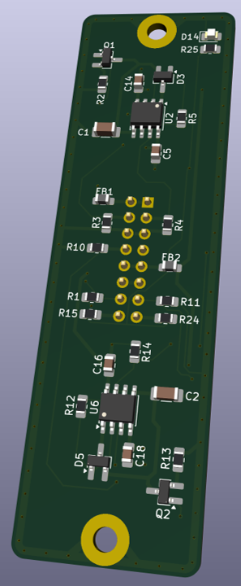
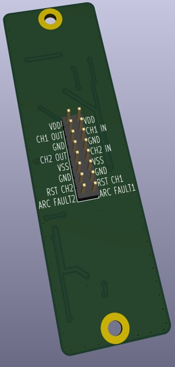
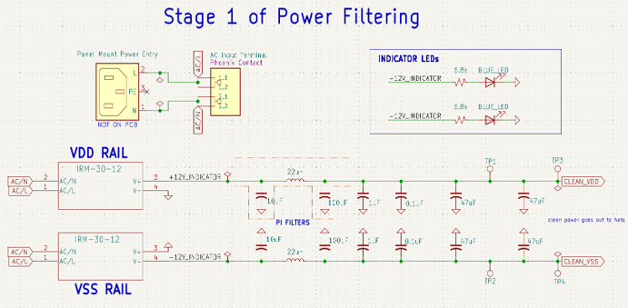

Capture microsecond voltage pulses from an arc flash optical sensor and accurately report peak values to a Beckhoff PLC data acquisition system. The system needed to reliably detect and hold fast transient pulses long enough for a much slower PLC sampling loop to read them, without sacrificing measurement accuracy.
Each channel receives a 0-4V input pulse from an arc flash optical sensor (photodiode based) representing the intensity of a detected arc event. The core of each channel's circuitry is a peak-detector built around an AD8066 op amp driving a holding capacitor. The op amp charges the capacitor to the peak input voltage and holds that charge for several milliseconds, which is long enough for the PLC to sample it on its own scan cycle. Circuit Schematic is shown below.

Each channel outputs two signals to the PLC:
After the PLC samples the peak value, it drives a reset (RST) signal back to the circuit, which discharges the holding capacitor and prepares the channel to capture the next event. The final PCB iteration is a modular "hat" design. Each "hat" contains two channels worth of circuitry.


Getting accurate peak capture on a 5-10 µs pulse while holding that value stable for milliseconds turned out to be a complex balance. Early iterations of the circuit only achieved around 10% accuracy, with most of the error coming from capacitor droop, op amp and diode leakage, and reset timing. You can see this on the oscilloscope reading below.

Through several redesigns of the peak-detector stage, I brought the final iteration down to &tl;0.5% total measurement accuracy across the full signal path, from optical input to PLC readout. You can see the difference below.

This gain in accuracy was due to swapping components and designing a better power filter as shown below. Creating extremely clean power rails for the op-amp proved to increase accuracy by ~1%. I validated the total accuracy by feeding known reference pulses into each channel and comparing the PLC's recorded values against the input values around 10 times per channel.

In addition to the electrical design, I designed the enclosure housing all 16 channels and selected connectors to bring signals from the D-sub outputs into the enclosure for a clean, industrial-ready package.

Also designed the main I/O panel for power filtering and easy-to-use I/O breakout.

This was a solo project completed over about two months, covering circuit design, PCB layout, enclosure design, connector selection, and full system validation and testing.
The final system met all key requirements: 16 channels, reliable capture of 5-10 µs pulses, and better than 0.5% total measurement accuracy in an industrial environment.